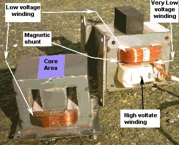
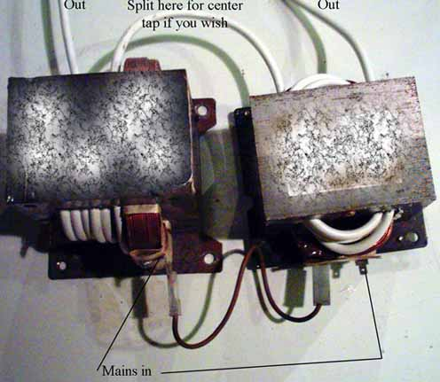

You can
remove the secondary from a salvaged microwave oven transformer. Cut off the high Voltage and the very low Voltage winding using a hack saw or power tool. Hammer out the rest of the winding using a bolt or blunt punch. Remove the Iron magnetic shunts. Take care not to damage the primary (low Voltage) winding as you will be using it. A new output winding consisting of about 10 or so turns is wound onto the core. Now with a 10 amp variac you've
got a variable power supply.
It is advisable to use a variable voltage
transformer (or use two MOT's with primary's connected in series) with microwave oven transformers because of the way they are
designed. The person making the transformer KNEW that the transformer would
ALWAYS be connected to a load (ie. the Magnetron). This allowed the designer to
put very little windings on the primary winding. If you connect one of theses
transformers directly to the mains without a load on them they will blow a fuse
because they will draw a very high magnetizing current. If you must use them
without a variable voltage transformer use two of them with the primaries in
series. This will solve the problem. You can connect the outputs in series
too.
Don't mess with the high voltage end of theses beasts as they can kill,
and have killed. Remove the high Voltage winding. A web search will obtain lots of information on
MOT's. See below for more detail regarding rewinding transformers in general.
By R.J.
The first thing that you should think about is the 'core area' of the
transformer. This is shown in the picture. The core area is the part of the transformer that the winding is
wound around. ie. It will be the area of the thick 'leg' of the core of the
transformer.
This area ultimately dictates what power the transformer can
supply.
If you have an old microwave transformer or other core from another
transformer then the core area will already be decided for you.
The core area
needed for a particular power (ie. the VA (Volts x Amps)) is:
Area = [square root(VA)]/5.58 or to put it another way (if you already have a core and you want to know its VA ability
VA = [5.58 x Area]squared
Note: all areas in square inches, one square inch = 6.45 square cm.
Now you need
to know how many turns to put onto the core for the input and output
The
number of turns required in a winding (input or output) is:
Total turns = V x
7.5/Core area (50HZ)
Total turns = V x 6.26/Core
area (60HZ)
In the case of 750 Watt MOT (common size of oven) you will do this calculation and only get about half of
750 = 375 Watts. The manufacturer is driving the transformer hard, there is also a fan keeping it cool. You will probably use the primary that was on the core already, the turns on the primary will (of course) already
be decided for you. You must recognise that with MOT's, because the designer KNEW that there would
ALWAYS be a load connected to the transformer and the fact that the transformer has magnetic shunts, he/she was able to put less windings on the primary than
the above equation will give. They usually put about half the amount of windings on the primary when compared to the above equation. When using your MOT you can simply put half the designed input voltage into the transformer using a variac or use two MOT's with the primaries connected in series. (each transformer will then see half the supply mains supply).
The thickness of wire you use will depend on the current that will be in the
winding. You should aim to have a current density in the wire of 2000A/square
inch (3.1A/square mm) or less. That is very conservative and you may get away with a
greater current density particularly with the output winding as it will only be
a few turns and will be exposed to the air where it can cool. The thickness of the wire in the primary if using the existing winding on an MOT will already be decided for you.
The wire you usually
see on transformers IS insulated. The insulation is transparent and you can see
the Copper colour thought the insulation. Sometimes the wire is Aluminium (cost cutting) with Copper coloured insulation (cost cutting and cunning!).
The area of wire cross section is
3.142 x [radius squared] BTW.
An east way to find out how many turns you need on the output is by putting on a few windings and measuring the output voltage. You will then get an idea of what turns you actually need. Use any plastic insulated wire that is heavy enough to carry the current. The required number of turns must fit into the holes in the core.
It is a good idea to put taps on the output so that you can apply different
Voltages to the cell to vary the current. The output of the MOT must be rectified. You can use a two diode rectifier since you are using two transformers and you can easily access the center point of the two winding (ie. where they join). A two diode rectifier will only give you half of the Voltage output of the series connected output windings remember. A four diode bridge rectifier will give you the full Voltage that the series connected output windings are capable off.
See here for more info on simple rectifiers. http://en.wikipedia.org/wiki/Rectifier
If after joining the two outputs in series (don't join in parallel as your transformers will not share the current load equally) the output Voltage is very low or zero it is probably because you have the secondaries connected the wrong way around to each other. Simply reverse the connection going to one of the secondaries.
Replacing the Iron magnetic shunts will give the transformer controlled current capabilities, it's output Voltage will droop quite considerably as current is increased. This is the type of supply which suits the (Per)Chlorate maker. I will leave it to the constructor to experiment.
 
The above picture shows the inputs of two 230 Volt input microwave oven transformers connected together in series for connection to the 230 Volt mains supply. Since the core areas are not exactly the same and the input winding have not exactly the same number of windings on them (difficult to count), more input voltage was dropped across one input winding than the other. 130 Volts on one and 100 Volts on the other. This is not a problem. The output windings were placed where the high Voltage secondary used to be and the Voltage simply measured to find out what the 'turns per Volt' value of each transformer was. Then you can put on the amount of turns on each to give a reasonably balanced voltage coming from each secondary. You may like to split the wire where the secondaries join (mid point) and use two diodes to rectify the output. This will give you a Voltage to the cell of approx. what each transformer is putting out. If you use a bridge rectifier (4 diodes) and not use the mid point, then your cell will see the Voltage that both transformers are putting out. ie. twice the Voltage of the last case. This may suit if you have 4 (as opposed to 2) diodes. You can tap the windings anywhere you like to give whatever Voltage suits your set up. In fact you don't have to put in permanent taps. If you wire is reasonably flexible you can simply put in a winding (or two or three...) each side of the center point to give you more Voltage if you need it. You can take out winding to reduce Voltage. Don't cut the wire, leave it so that you can put in and take out winding as you so wish. Not the tidiest of set up, but its a (Per)Chlorate power supply we are making, not an exhibit in a beauty pageant. If you are using a Variac the taps are not really relevant. (You can never have enough Variac's you know!) Remember if little or no Voltage appears from the joined secondaries they are probably connected the wrong way around. Unwind one transformer secondary and wind the opposite way.
HIT THE BACK BUTTON ON YOUR BROWSER